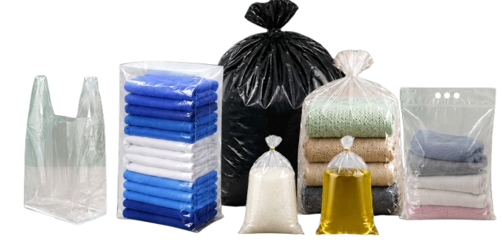

KEBERSIHAN01 / 04
Kantong Sampah
Praktis dan kuat untuk kebutuhan kebersihan sehari-hari.

Kami percaya bahwa kemasan yang tepat membuat aktivitas sehari-hari dan operasional bisnis jadi lebih mudah. Karena itu, KATO menghadirkan pilihan kantong yang praktis, kuat, dan ekonomis.
Mulai dari kantong sampah, laundry, polybag, hingga kresek dalam berbagai ukuran.
Mengapa memilih KATO?Temukan pilihan kantong dan kemasan untuk rumah, usaha, dan kebutuhan sehari-hari.
Praktis dan kuat untuk kebutuhan kebersihan sehari-hari.
Kemasan rapi untuk bisnis laundry dan kebutuhan rumah.
Beragam pilihan kemasan untuk kebutuhan usaha Anda.
Tersedia berbagai ukuran untuk kebutuhan yang berbeda.
Kebutuhan berbeda, satu pilihan yang bisa diandalkan.
Material yang dipilih untuk mendukung penggunaan sehari-hari.
Pilihan ekonomis untuk kebutuhan pribadi maupun bisnis.
Beragam jenis dan ukuran untuk kebutuhan yang beragam.
Hubungi tim kami untuk informasi produk dan ketersediaan stok.
Punya pertanyaan soal produk, ukuran, atau pembelian grosir? Hubungi tim KATO untuk informasi lebih lanjut.
Tanya Produk Sekarang Alamat email di atas adalah placeholder. Ganti dengan kontak resmi perusahaan.